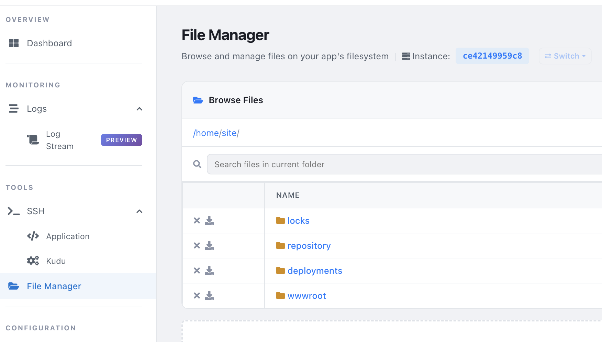

Azure App services
Plan
App Service plans determine the location, scale, and features available for the web app.
Configuration
- See environment variables.
- health endpoint are configured in App Service Configuration -> Health Check. It can be /health or /healthz or custom.
- WEBSITES_ENABLE_APP_SERVICE_STORAGE = true, set to persisted data. Default to false, and useful for persisting data in the container (not recommended, use Azure Storage instead).
- always_on, means does not scale to 0. Take note: App services scales to 0 after 15mins of unused time if always_on is not set.
- WEBSITES_PORT = 80, App services use dynamic port, make sure you set this value.
- Start up with
az webapp config set \ --resource-group myResourceGroup \ --name myDocumentProcessor \ --startup-file "/bin/bash -c 'python migrate.py && gunicorn app:application'" - Can use file
--settings @settings.jsoninstead of--startup-filefor multiple configurations. - Using keyvault.
- Keyvault reference identity must be set to System-assigned managed identity for App service's Service Principal.
- Enable with
az webapp update --resource-group <group-name> --name <app-name> --set keyVaultReferenceIdentity=$(az identity show --resource-group <group-name> --name <identity-name> --query id -o tsv) - Set keyvault with
--settings API_KEY="@Microsoft.KeyVault(SecretUri=https://myvault.vault.azure.net/secrets/api-key)". - Auto update secret change check interval is 24 hours due to cache. link
Deployment Slots
- Enabled with Basic, Standard, Premium, and Isolated pricing tiers. Not available for Free or Shared tiers. 5 slot or 20 slots.
- Deployment, works like KEDA after new code is deployed to the slot, the app will be restarted, then traffic will be shifted to the new slot.
- Blue/Green
- Canary Releases - lil' by lil'
- Enable promote and also change for "API_ENDPOINT".
az webapp config appsettings set \ --resource-group myResourceGroup \ --name myDocumentProcessor \ --slot staging \ --slot-settings \ ENVIRONMENT=staging \ API_ENDPOINT=https://api-staging.example.com - Sticky connection is important! Sticky Connection - for stateful apps where prod/staging has own configuration. When swapped only the app configuration will be swapped, not the sticky connection. It means prod/staging still use own configuration after swap. If not check, swap will swap database and configurationas well. Check it in Configuration -> General Settings.
**Scenario A**: The Checkbox is UNCHECKED (Not Sticky) By default, settings are not sticky. This means the configuration is glued to your Code. Before Swap: Your Staging slot is running Code_v2 and has the Test_Database configuration. Your Production slot is running Code_v1 and has the Prod_Database configuration. The Swap: You click swap. After Swap: Code_v2 moves to Production, but it brings the Test_Database configuration with it! Your production users are now accidentally reading and writing to your test database. Meanwhile, Code_v1 goes to Staging and takes the Prod_Database setting with it. (This is usually a disaster for backend systems). ***Scenario B***: The Checkbox is CHECKED ("Deployment slot setting" / Sticky) When you check this box, you un-glue the configuration from the code and nail it to the floor of the Slot itself. Before Swap: Staging has Code_v2 (nailed down: Test_Database). Prod has Code_v1 (nailed down: Prod_Database). The Swap: You click swap. After Swap: The code swaps, but the settings stay exactly where they were! Production now gets the shiny new Code_v2, but because the Prod_Database setting is nailed to the Production slot floor, Code_v2 automatically connects to the real production data. Staging gets Code_v1 and connects to the test data.
Kudu
Kudu is a service for deploying and managing web applications.

Troubleshooting
- Logs
| Category | Description |
|---|---|
| AppServiceConsoleLogs | Container stdout and stderr output |
| AppServiceHTTPLogs | HTTP request and response information |
| AppServicePlatformLogs | Container lifecycle events and platform messages |
| AppServiceAppLogs | Application-level logs (when configured) |
- SSH, but image must have SSH support,
RUN apt-get update && apt-get install -y openssh-server